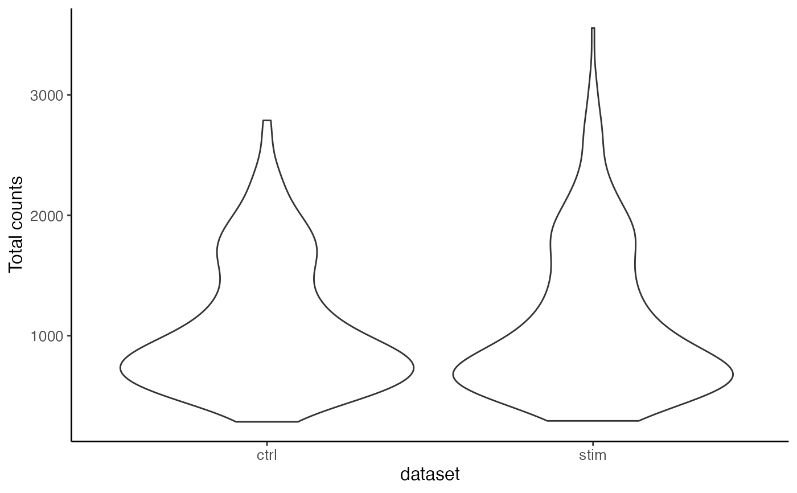
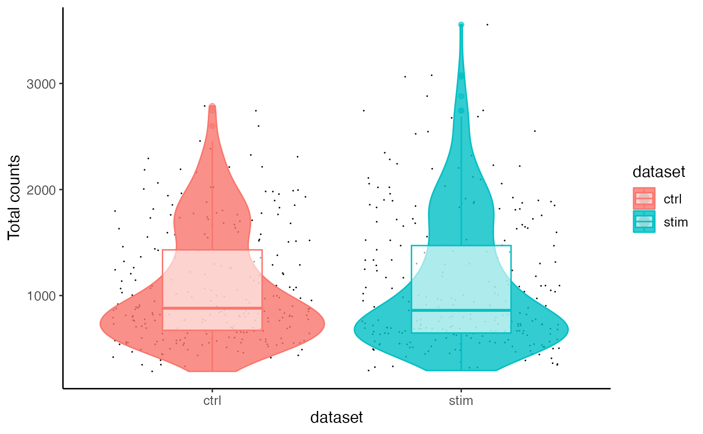

By default, a violin plot grouped by dataset variable, overlaid by a box plot would be generated. Options are available for adding jittered dot plot behind.
plotTotalCountViolin(object, groupBy = "dataset", ...)
plotGeneDetectedViolin(object, groupBy = "dataset", ...)liger object, or a data.frame like object of cell
metadata, where "dataset" variable must exist.
Group data by this categorical variable.
Theme setting parameters. Check .ggplotLigerTheme
for more options and details.
Metric to use. Should be found in cellMeta(object).
Color the dot, violin and box plot with this variable.
Whether to add corresponding plot(s).
Specify a color to set uniform color to all dots. Default
"black". Set NULL then colored by colorBy.
Size of dots.
The transparency of violins or boxes,
respectively. 1 is opaque and 0 is transparent.
Title for x-/y-axis, respectively. Default groupBy
and metric.
data("pbmc", package = "rliger")
plotTotalCountViolin(pbmc)

plotTotalCountViolin(pbmc, dot = TRUE, box = TRUE, colorBy = "dataset")
#> Warning: Duplicated `override.aes` is ignored.
